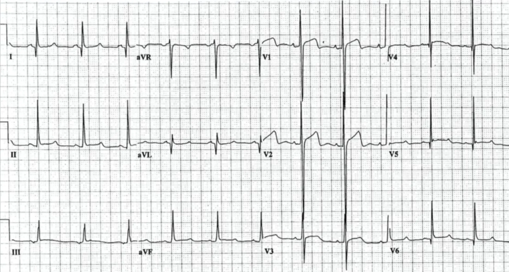
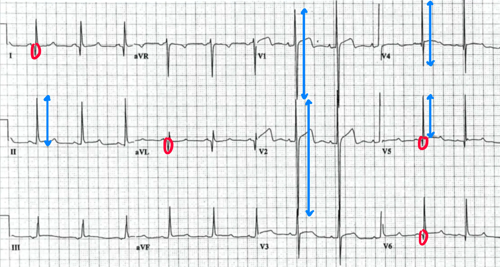

Fall 4a
Im Universitätskrankenhaus in Baltimore, Maryland, wird ein 29-jähriger Mann untersucht, nachdem er einmalig synkopiert war. Da er bei der Untersuchung keinerlei Beschwerden äußerte und auch die Ärzte keine Ursache finden konnten, wurde der Patient entlassen.
EKG

Ein paar Tage später bricht der Patient während einer sportlichen Aktivität erneut zusammen. Beim Eintreffen der Paramedics zeigt der Monitor ein Kammerflimmern, die Reanimation wird eingeleitet. Im Krankenhaus angekommen, wird noch vergeblich versucht, den Patienten wiederzubeleben. Der 29-Jährige wird für tot erklärt.
Hypertrophe (Obstruktive) Kardiomyopathie
Die Hypertrophe Kardiomyopathie (HCM) ist die häufigste hereditäre Kardiomyopathie und eine der häufigsten Ursachen des plötzlichen Herztodes bei jungen und gesunden Menschen (vor allem bei
Sportlern).
Die Hypertrophie (häuftg betont am Septum) führt zu einer schlechteren Blutversorgung des subendokardialen Myokards. Zusammen mit ungeordneten Muskelfasern ("Myocardial Disarray") entsteht so
eine Basis für maligne ventrikuläre Arrhythmien. Bei der obstruktiven Form (HOCM) kann das verdickte Septum zusätzlich den linksventrikulären Ausflusstrakt einengen, besonders unter Belastung.
Obwohl es sich um eine strukturelle Veränderung des Herzens handelt, kann sie selbst bei Spitzensportlern, die regelmäßig darauf untersucht werden, übersehen werden.
Am 26. Juni 2003 im Confed-Cup-Halbfinale in Lyon, brach der kamerunische Nationalspieler Marc-Vivien Foé ohne Fremdeinwirkung auf dem Platz zusammen. Die
Reanimation blieb erfolglos und er verstarb mit 28 Jahren. Die erste Obduktion blieb ohne Befund. Erst bei der zweiten Obduktion konnte eine Hypertrophe Kardiomyopathie festgestellt werden.
Im EKG zeigen sich typischerweise sehr hohe Amplituden (LVH-Zeichen) sowie schmale, tiefe, dolchartige Q-Zacken in den lateralen und inferioren Ableitungen.
